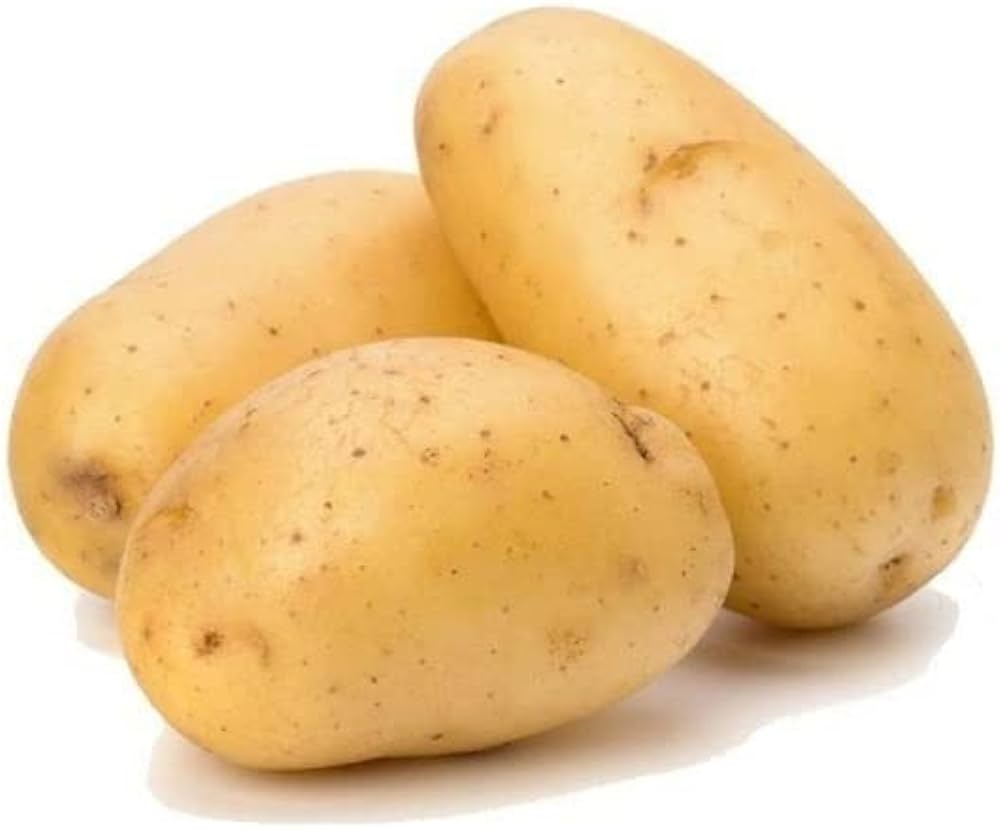
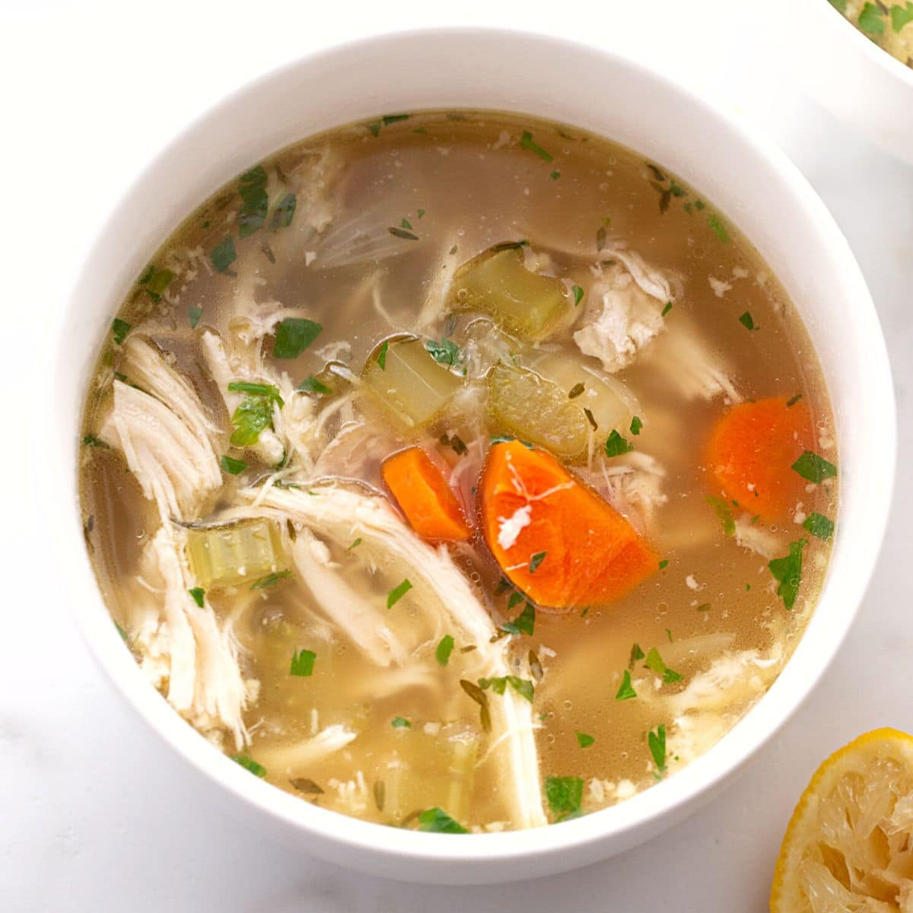

MENU
Veg Items
Paneer
Paneer is an Indian cheese that's made from curdled milk and some sort of fruit or vegetable acid
like lemon juice. There are some distinct traits that make Paneer the cheese that it is:
It is an unaged cheese
It's a soft cheese
It doesn't melt
You can eat paneer as a snack, incorporate it into your favorite Indian dishes or enjoy over
breakfast. And while cheese might not seem like a common breakfast item, don’t
knock it until you've tried it.
Paneer Starters
Paneer Gravies

Paneer Snacks
Paneer Main Course
Mushroom
Many people think that mushrooms are vegetables. But this is not the case.
All vegetables and fruits come from edible plants. The main characteristic of plants is that they contain chlorophyll,
which is used to convert energy from sunlight into carbohydrates. However, mushrooms contain no chlorophyll which
means they can not photosynthesize; they 'steal' the carbohydrates they need from plants. A mushroom (Agaricus Bisporus)
is one of the many species of fungi.
They have been given their own kingdom due to the sheer number of species that exist: 'The Kingdom of Fungi'.
Mushroom

Mushroom starters
Mushroom Gravies

Potato
A potato is a vegetable, the Solanum tuberosum.
It is a small plant with large leaves. The part of the potato that people eat is a tuber that grows under the ground.
A potato has a lot of starch and other carbohydrates. Potato usually has a light-brown or yellowish skin and is
white or yellow inside. If the potato gets light on it, the tuber turns green and will be poisonous
Potato

Potato starters/Snacks
Potato Main Course
Non-Veg Items
Chicken
The chicken (Gallus domesticus) is a large and round short-winged bird, domesticated from the red junglefowl of
Southeast Asia around 8,000 years ago. Most chickens are raised for food, providing meat and eggs; others are kept
as pets or for cockfighting. Chicken. Male (left) and female chickens.
Chicken Soup

Chicken soup is a soup made from chicken, simmered in water, usually with various other ingredients.
The classic chicken soup consists of a clear chicken broth, often with pieces of chicken or vegetables;
common additions are pasta, noodles, dumplings, or carrots, and grains such as rice and barley.
Chicken Biryani

Chicken biryani is a delicious Pakistani/Indian rice dish that's typically reserved for special
occasions such as weddings, parties, or holidays such as Ramadan. It has a lengthy preparation,
but the work is definitely worth it. For biryani, basmati rice is the ideal variety to use.
Mutton
meat, the flesh or other edible parts of animals (usually domesticated cattle, swine, and sheep) used for food,
including not only the muscles and fat but also the tendons and ligaments.
Mutton
Mutton haleem
Haleem is a type of stew that is widely consumed in South Asia, the Middle East and Central Asia.
Although the dish varies from region to region, it optionally includes wheat or barley,
meat and lentils. It is made by blending or mashing the meat in the curry and serving hot with
flat breads or on its own.
Mutton Biryani

This recipe will help you make the most AMAZING Mutton Biryani. With this recipe, nail that
3-ingredient marinade for the mutton, learn how to make the mutton masala for biryani, and how
to get the biryani layers right! With this easy mutton biryani recipe handy, it’s a biryani feast
any day of the year
Fish
Fish is particularly a good source of minerals like calcium, phosphorus, iron,
copper and trace elements like selenium and zinc.
Besides, saltwater fish contains high levels of iodine also. In fact,
fish is a good source of all nutrients except carbohydrates and vitamin C.
Fish
Fish Curry

Malabar matthi curry, also known as fish curry, is a traditional Kerala dish.
It is usually prepared with fish semi-stewed in a Kerala-style sauce that typically
includes a blend of spices and assorted vegetables, such as okra or onions.
Fish fry

A fish fry is a meal containing battered or breaded fried fish.
It usually also includes french fries, coleslaw, macaroni salad, lemon slices,
tartar sauce, hot sauce, malt vinegar and dessert. Some Native American versions
are cooked by coating fish with semolina and egg yolk.